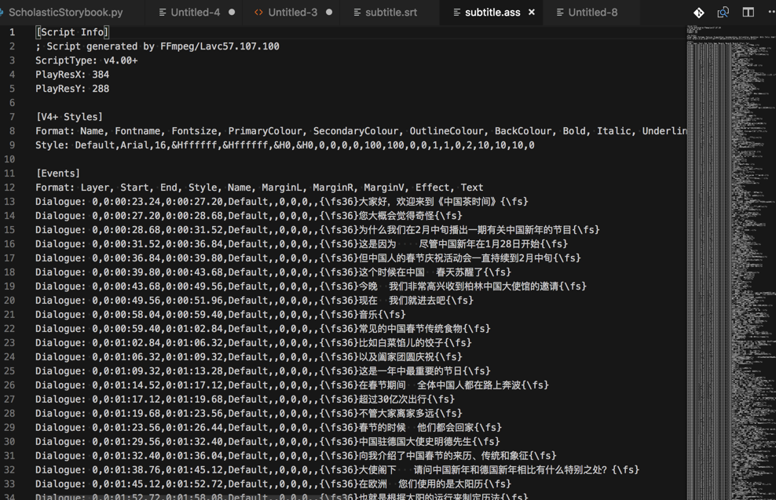
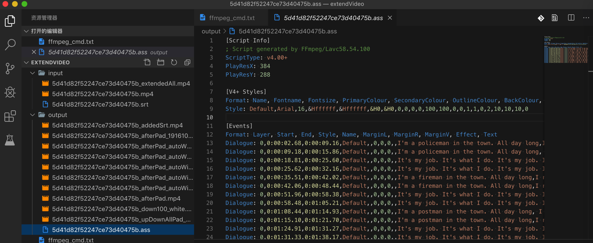

字幕格式
ASS
- Advanced SubStation Alpha=ASS
- 一句话描述：一种比SSA更先进的字幕脚本格式
- 之前的格式 SSA
- 全称：SubStation Alpha
- 或 Sub Station Alpha
- 由 CS Low（亦作 Kotus）创建
- 特点
- 比传统字幕（如SRT）更加强大先进的字幕文件格式。
- 该格式在Windows平台上可以经播放器由VSFilter渲染进行播放。这是一款广受欢迎且已停止开发的字幕编辑制作工具。
- 最新版本：V4.00
- 全称：SubStation Alpha
- 之前的格式 SSA
- 基于：SSA 4.00+编码构建
- 特点：
- 在SSA编写风格的基础上增添更多的效果和指令
- 使用现状
- 该字幕格式常被字幕组所应用
- 目前有很多播放器支持渲染SSA、ASS字幕
- 该字幕格式常被字幕组所应用
- 最新版本：V4.00+
- ASS字幕分类
- 软字幕
- 特点
- 过程可逆
- 可以提取、取出和查看源代码的
- 过程可逆
- 包含
- 内挂字幕
- 一般指字幕文件与视频一同封装在MKV文件中，播放时需经过VSFilter渲染
- 外挂字幕
- 字幕文件以单独形式存在，播放时经VSFilter渲染到视频上
- 内挂字幕
- 特点
- 内嵌字幕
- 指字幕被以图形方式硬编码到视频中
- 变成视频数据本身=视频数据的一部分
- 特点
- 过程不可逆
- 无法再把字幕提取出来
- 播放时不需VSFilter等渲染
- 过程不可逆
- 指字幕被以图形方式硬编码到视频中
- 软字幕
- 常用字幕制作软件
- Aegisub
- Jubler
- VisualSubSync
- subtitleeditor
- Sabbu
- Sub Station Alpha tool
- Subtitle Workshop
- Subtitle Processor
- Miyu
- Gaupol
- ASS格式详解
- 脚本说明
- Script Info: 脚本的一般全局信息:
- Title：标题
- Original Script：脚本原作
- Script Updated By：脚本优化
- Script Type：类型
- 用于兼容性设置
- SSA=4.00
- ASS=4.00+
- 用于兼容性设置
- PlayResX & PlayResY：屏幕宽高
- PlayDepth：决定颜色数量
- Timer：定时器
- V4 Styles: 定义文字样式，在events部分可以直接调用这些样式。
- PrimaryColour：第一颜色，即文字本身的颜色
- SecondaryColour：第二颜色
- 在卡拉OK时使用，卡拉OK指令会用第一颜色填充第二颜色。
- TertiaryColour：边框色，文字边框的颜色
- ASS中称为OutlineColour
- BackColour：阴影颜色，文字阴影的颜色
- MarginL, MarginR. 左右缩进。文字距离视频最左最右的最小距离。
- MarginV： 上下缩进。
- 文字热点（对齐点）距离视频上下的最小间距离。这取决于文字对齐方式，如果该文字使用中对齐，则上下缩进值无效。需要时文字可用\n或\N命令换行。ASS文件中，Script Info部分的一个参数“WrapStyle”也可以改变此值
- Outline：边框样式
- 文字可以设定为有边框，无边框，或拥有不透明边框（矩形背景）
- Shadow：阴影距离
- 文字的阴影到文字的距离大小
- AlphaLevel.：透明度（0至255有效）
- Encoding：ASCII码中的文字编码方式
- Alignment：对齐方式
- 含义：画面中位置的对齐方式，按照数字键盘区布局
- 取值范围：1-9
- 具体效果，参考此图： *
- 默认：2
- 底部居中
- Script Info: 脚本的一般全局信息:
- Events: 字幕的主体部分
- 字幕的出现时间和样式、对样式的修改和特效
- 语法格式为：
- {\命令(参数，多个参数用逗号隔开)}
- 例如
- {\move(80,80,200,200,150,300)}
- 只有一个参数的命令不需要括号 (如. {\kf89})
- 例如
- {\命令(参数，多个参数用逗号隔开)}
- 语法格式为：
- 注意
- 一对大括号内可以放置多个语句
- 如
- {\bord8\be1}
- 如
- \N 和 \n 命令不需要在两边加大括号就可使用
- 一对大括号内可以放置多个语句
- 字幕的出现时间和样式、对样式的修改和特效
- 脚本说明
- 一句话描述：一种比SSA更先进的字幕脚本格式
ass字幕文件举例
举例1：

举例2：input/5d41d82f52247ce73d40475b.ass
内容是
[Script Info]
; Script generated by FFmpeg/Lavc58.54.100
ScriptType: v4.00+
PlayResX: 384
PlayResY: 288
[V4+ Styles]
Format: Name, Fontname, Fontsize, PrimaryColour, SecondaryColour, OutlineColour, BackColour, Bold, Italic, Underline, StrikeOut, ScaleX, ScaleY, Spacing, Angle, BorderStyle, Outline, Shadow, Alignment, MarginL, MarginR, MarginV, Encoding
Style: Default,Arial,16,&Hffffff,&Hffffff,&H0,&H0,0,0,0,0,100,100,0,0,1,1,0,2,10,10,10,0
[Events]
Format: Layer, Start, End, Style, Name, MarginL, MarginR, MarginV, Effect, Text
Dialogue: 0,0:00:02.68,0:00:09.16,Default,,0,0,0,,I'm a policeman in the town. All day long,I walk around!\N我是镇上的警察 整天都在巡视
Dialogue: 0,0:00:09.18,0:00:15.86,Default,,0,0,0,,I'm a policeman in the town. All day long, I walk around!\N我是镇上的警察 整天都在巡视
...
Dialogue: 0,0:02:04.21,0:02:10.82,Default,,0,0,0,,It's my job. It's what I do. It's my job. I like it, too!\N牛奶员我的工作 这就是我的工作 牛奶员我的工作 我也很喜欢这份工作

srt
srt=subtitle
举例
中英文双字幕：
1
00:00:02,000 --> 00:00:06,700
Careful now, I don't want to hurt you.
现在要小心了 我可不想伤到你啊
2
00:00:10,500 --> 00:00:14,550
So Mr. Teacher guy, as the real Dragon Warrior,
那么 这个作为神龙斗士老师的你
3
00:00:14,560 --> 00:00:17,950
I say to you, Shakabooey!
我想对你说 滚你的
4
00:00:24,500 --> 00:00:28,030
So, guess you can start planning my parade now.
那 我想你们可以开始我的游行了是吧
英文（单字幕）：
1
00:00:02,310 --> 00:00:04,677
I am a little turtle
2
00:00:04,752 --> 00:00:07,540
I crawl so slow
3
00:00:07,670 --> 00:00:12,120
I carry my house wherever I go.
4
00:00:12,210 --> 00:00:16,927
When I get tired, I put in my head,